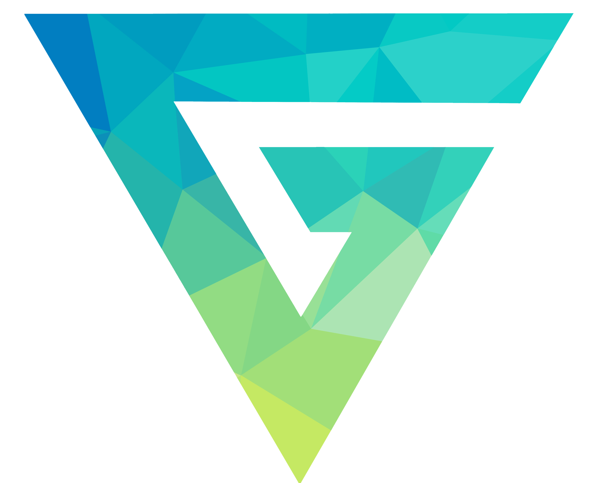

President
McMaster Geeks @ McMaster University
- Coordinated and Managed Executive Team: Orchestrated and supervised a team of 26 executive members, meticulously planning and collaborating on upcoming events throughout the school year. Successfully executed weekly events with over 40 attendees and organized large-scale events attracting over 500 attendees
- Enhanced Team Efficiency through Communication: Fostered effective team communication by leading weekly meetings, conducting follow-ups, and engaging in one-on-one meetings, resulting in a 50% boost in club efficiency
- Expanded Club Membership through Outreach: Created and led student outreach initiatives, leading to a 400% increase in club members across various social platforms
- Revitalized Club Dynamics post-COVID: Restructured the club's internal processes post-COVID to be more inclusive, engaging, and consistent, leading to a remarkable 200% increase in member engagement
- Led Web Development for Club Website: Collaborated with the club's web developer in the creation of an enhanced Geeks website, positioning the club as a legitimate organization for future sponsorships
- Contributed to Executive Team Onboarding: Partnered with the VP of Administration to facilitate the recruitment and successful onboarding 10 new executive members
- Enhanced Engagement with Sponsors and Members: Teamed up with the VP of Sponsors to bring fresh opportunities to club members and amplify event engagement, contributing to the club's overall growth and success
Leadership
Networking
Adaptability
Problem-Solving
Vice President Admin
McMaster Geeks @ McMaster University
- Executed 4 Post-COVID Events: Strategically planned and executed 4 events as COVID restrictions eased, ensuring successful and engaging experiences for attendees
- Handled Event Logistics: Managed intricate event logistics, including room reservations and event setup, guaranteeing seamless execution
- Oversaw Club Communications: Acted as the point of contact for all communications with the McMaster Student Union, club members, and sponsors, maintaining transparent and effective information flow
- Document Management and Creation: Maintained an organized repository of all club documents and played a key role in generating new documentation to support club operations and growth
Organization
Communication
Documentation